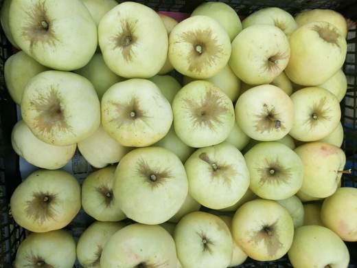
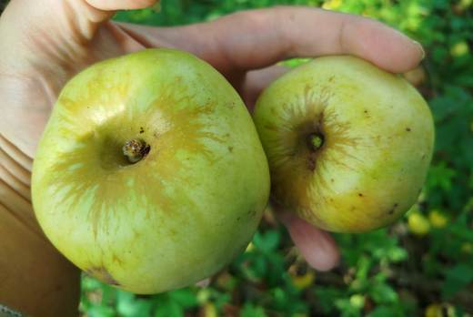
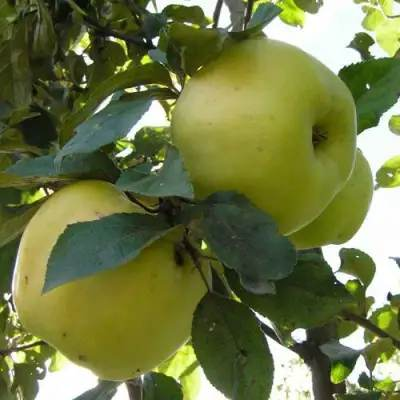
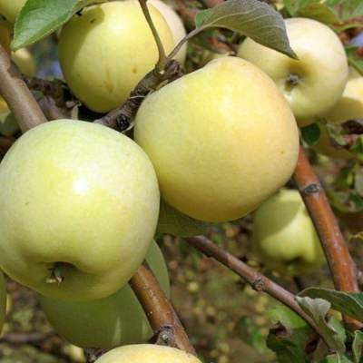

«Королева русского сада»: легендарный аромат, неубиваемая зимостойкость и яблоки, которые пахнут на весь шкаф.




Клик по фото — полный размер. Фотографии иллюстрируют сорт/вид; собраны из открытых источников (питомники, сортовые каталоги, Википедия).
Антоновка обыкновенная — старинный сорт народной селекции, первое описание которого относится к середине XIX века. Ни один классический русский сад без неё не обходился: это и зимние запасы, и мочёные яблоки, и знаменитая шарлотка, и «душистый шкаф» — яблоки раскладывали среди белья, и оно пахло антоновкой всю зиму.
Плоды зеленовато-жёлтые, при хранении становятся соломенно-жёлтыми. Мякоть желтоватая, сочная, зернистая, кисло-сладкая с преобладанием кислоты, исключительно ароматная. Сахаров более 9 %, витамина С — с избытком. Дерево сильнорослое, с широкой кроной, живёт и плодоносит десятилетиями.
| Происхождение | народная селекция средней полосы России |
| Тип по срокам | раннезимний (позднеосенний) |
| Самоплодность | самобесплодна; сама — прекрасный опылитель |
| Опылители | Уэлси, Анис, Осеннее полосатое, Пепин шафранный и большинство среднецветущих сортов |
| Устойчивость к парше | средняя — в дождливые годы нужна защита |
| Лёжкость | хорошая: до декабря–января при 0…+2 °C |
| Периодичность | с возрастом склонна плодоносить через год |
Советы собраны из отзывов садоводов на форумах и из практики питомников; цитаты приведены по источникам ниже.